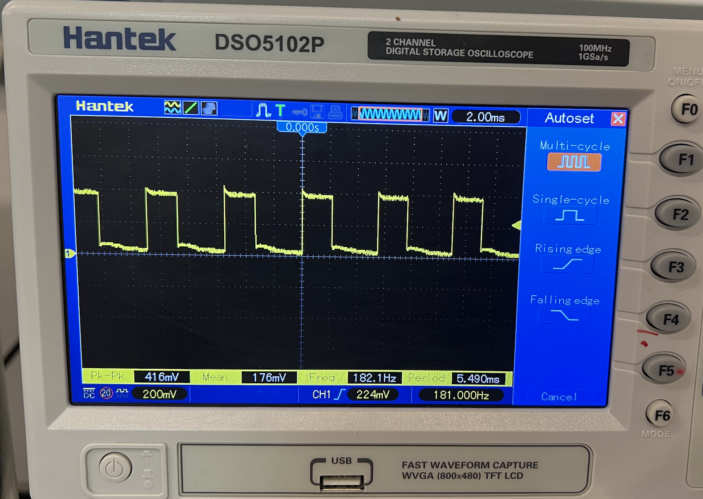
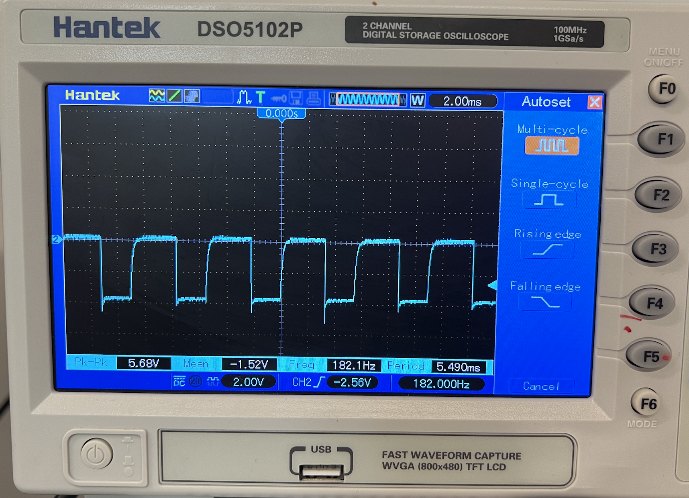

The objective of this lab was to control the RC car with the Artemis microcontroller. To do so, it was necessary to replace the internal components of the RC car with new components driven by the Artemis, specifically two motor drivers and all the electronics explored in the previous labs.
The first important consideration of this lab was which pins to connect the motor drivers to. Pins 8 and 10 on the Artemis cannot be used for PWM, so the chosen pins were 4, 5, 6, and 7. These were conveniently placed near each other and allowed for easy placement of the motor drivers inside the RC car. The next consideration was how to power the motors. The motors need to have their own battery because they draw a lot of power and may interfere with the Artemis if they are all connected to one power supply. As such both motors were connected to a designated 850mAh battery with a rated voltage of 3.7V, which is suitable for the motors. This battery was powerful enough to power both motors. Finally, it was important to consider wire lengths when soldering the circuit due to the placement requirements of certain components, such as the time of flight sensors, within the car.
To make sure that the motor drivers were working as intended, it was necessary to test them before soldering them to the motors. The initial test was simply making sure that all the pins were properly connected. Using a multimeter, the continuity of all the wires was checked and the circuit was confirmed to be wired correctly. The next step was to test if the proper PWM signal was produced by the motor drivers. To test this, both motor drivers were connected to the Artemis, and a power supply with 3.7V. It was important for the power supply to mirror the voltage of the battery such that the test accurately matched the real circuit and so that none of the components would blow up. Using analogWrite() on the two pins of the motor drivers, a PWM signal was produced that was measured by the oscilloscope. Since only one set of BNC test leads for the oscilloscope was available at the time of measurement, the two motor drivers were tested individually.

After confirming that the circuit worked correctly, the internal components of the RC car were removed. The motor drivers were then soldered to the motors following the circuit mentioned in the prelab. Finally, the motors were tested by running code that would spin each set of wheels forward and then backward. After confirming that the test worked when powered by the computers, it was repeated with an independent battery powering the RC car.
Due to inertial restrictions and frictional forces, PWM signals under a certain threshold do not cause the car to move forward. It was therefore necessary to determine what PWM frequency was sufficient to move the car. To accomplish this, the car was set to discretely increase the PWM signal until it started moving. By observing when the motion occurred, it was possible to identify the minimum PWM signal required to move the car. During tests, the car would sometimes start at duty cycles as low 32/256. However, the duty cycles of 48/256 proved to be the most reliable in consistently making the car move forward, so it was designated as the minimum threshold.
Although both motors are theoretically identical, in the real world they have some differences. As such both motors may not spin at the exact same speed when powered by the same PWM signal. However, using a calibration factor on one motor would allow for the two motors to move in sync. In my case, even with no calibration factor, the motors moved at almost the same rates. However, increasing the PWM of the left motor by 1.02 proved to slightly minimize the differences between the two motors. To test the differences in the motors, the car was programmed to move in a straight line.
With the circuit complete and the motors calibration, it was time to test some moves. Keeping it simple, I had the car move forward and backward and then perform an S maneuver. The control for this was entirely open-loop, so there was no internal feedback. However, the car still performed relatively well.